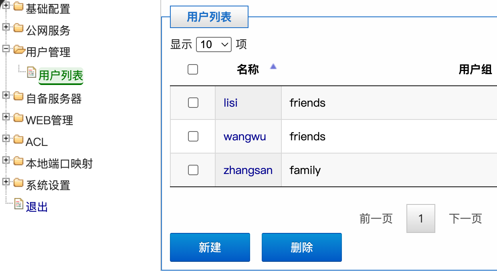

可以创建用户/用户组, 域名映射资源可以关联用户组
配置路径: "用户管理-用户列表"

配置视图： config-view -> users-view
使用示例:
users-view>user test password 123456
users-view>user test group group1
users-view>show users
Name:test;Group:group1;Level:0
users-view>no user test
命令说明:
| user %NAME password %PASSWORD | 添加一个名为%NAME的用户并设置密码为%PASSWORD |
| user %NAME group %GROUP | 设置用户所属于的用户组 |
| show users | 显示用户 |
| no user %NAME | 删除名为%NAME的用户 |